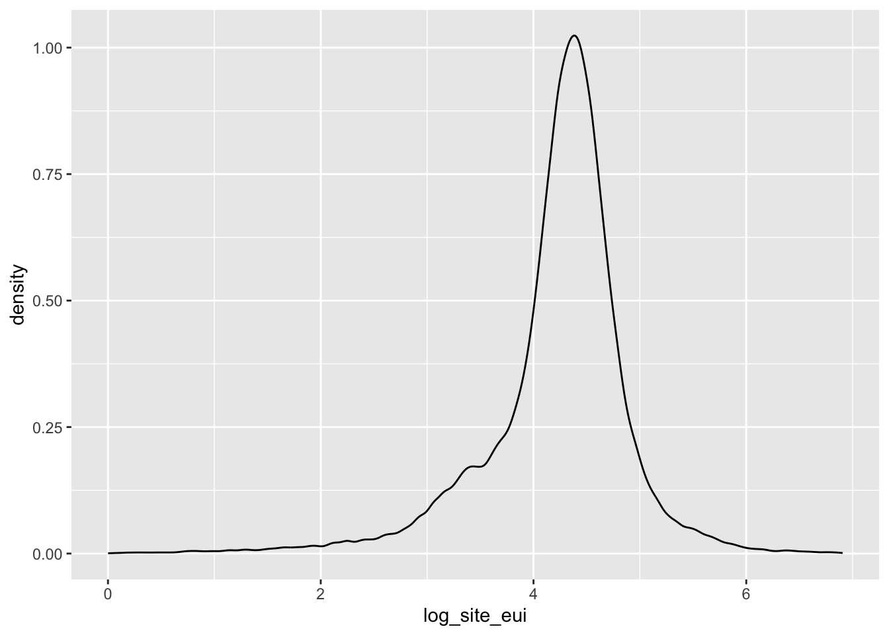

Energy Consumption Prediction
Climate change is a globally relevant, urgent, and multi-faceted issue heavily impacted by energy policy and infrastructure. Addressing climate change involves mitigation (i.e. mitigating greenhouse gas emissions) and adaptation (i.e. preparing for unavoidable consequences). Mitigation of GHG emissions requires changes to electricity systems, transportation, buildings, industry, and land use.
According to a report issued by the International Energy Agency (IEA), the lifecycle of buildings from construction to demolition were responsible for 37% of global energy-related CO2 emissions in 2020. Yet it is possible to drastically reduct the energy consumption of buildings by a combination of easy-to-implement fixes and state-of-the-art strategies. For example, retrofitted buildings can reduce heating and colling energy requirements by 50-90 percent. Many of these energy efficiency measures also result in overall cost savings and yield other benefits, such as cleaner air for occupants. This potential can be achieved while maintaining the services that buildings provide.
Goal
The goal of this competition is to predict the energy consumption using building characteristics and climate and weather variables.
Data
The WiDS Datathon 2022 focuses on a prediction task involving roughly 100k observations of building energy usage records collected over 7 years and a number of states within the United States. The dataset consists of building characteristics (e.g. floor area, facility type etc), weather data for the location of the building (e.g. annual average temperature, annual total precipitation etc) as well as the energy usage for the building and the given year, measured as Site Energy Usage Intensity (Site EUI). Each row in the data corresponds to the a single building observed in a given year. Your task is to predict the Site EUI for each row, given the characteristics of the building and the weather data for the location of the building.
Setup
Load Data and Packages
Clean Data
Code
data <- data |>
janitor::clean_names() |>
mutate(
state_factor = factor(state_factor),
building_class = factor(building_class),
facility_type = factor(facility_type),
year_built = factor(year_built, ordered = TRUE),
energy_star_rating = factor(energy_star_rating, ordered = TRUE),
log_site_eui = log(site_eui)
)
data |>
gt_preview() |>
tab_header(title = "Building Energy Dataset")| Building Energy Dataset | |||||||||||||||||||||||||||||||||||||||||||||||||||||||||||||||||
|---|---|---|---|---|---|---|---|---|---|---|---|---|---|---|---|---|---|---|---|---|---|---|---|---|---|---|---|---|---|---|---|---|---|---|---|---|---|---|---|---|---|---|---|---|---|---|---|---|---|---|---|---|---|---|---|---|---|---|---|---|---|---|---|---|---|
| year_factor | state_factor | building_class | facility_type | floor_area | year_built | energy_star_rating | elevation | january_min_temp | january_avg_temp | january_max_temp | february_min_temp | february_avg_temp | february_max_temp | march_min_temp | march_avg_temp | march_max_temp | april_min_temp | april_avg_temp | april_max_temp | may_min_temp | may_avg_temp | may_max_temp | june_min_temp | june_avg_temp | june_max_temp | july_min_temp | july_avg_temp | july_max_temp | august_min_temp | august_avg_temp | august_max_temp | september_min_temp | september_avg_temp | september_max_temp | october_min_temp | october_avg_temp | october_max_temp | november_min_temp | november_avg_temp | november_max_temp | december_min_temp | december_avg_temp | december_max_temp | cooling_degree_days | heating_degree_days | precipitation_inches | snowfall_inches | snowdepth_inches | avg_temp | days_below_30f | days_below_20f | days_below_10f | days_below_0f | days_above_80f | days_above_90f | days_above_100f | days_above_110f | direction_max_wind_speed | direction_peak_wind_speed | max_wind_speed | days_with_fog | site_eui | id | log_site_eui | |
| 1 | 1 | State_1 | Commercial | Grocery_store_or_food_market | 61242 | 1942 | 11 | 2.4 | 36 | 50.50000 | 68 | 35 | 50.58929 | 73 | 40 | 53.69355 | 80 | 41 | 55.50000 | 78 | 46 | 56.85484 | 84 | 50 | 60.50000 | 90 | 52 | 62.72581 | 84 | 52 | 62.16129 | 85 | 52 | 64.65000 | 90 | 47 | 63.01613 | 83 | 43 | 53.80 | 72 | 36 | 49.27419 | 71 | 115 | 2960 | 16.59 | 0.0 | 0 | 56.9726 | 0 | 0 | 0 | 0 | 14 | 0 | 0 | 0 | 1 | 1 | 1 | NA | 248.682615 | 0 | 5.516177 |
| 2 | 1 | State_1 | Commercial | Warehouse_Distribution_or_Shipping_center | 274000 | 1955 | 45 | 1.8 | 36 | 50.50000 | 68 | 35 | 50.58929 | 73 | 40 | 53.69355 | 80 | 41 | 55.50000 | 78 | 46 | 56.85484 | 84 | 50 | 60.50000 | 90 | 52 | 62.72581 | 84 | 52 | 62.16129 | 85 | 52 | 64.65000 | 90 | 47 | 63.01613 | 83 | 43 | 53.80 | 72 | 36 | 49.27419 | 71 | 115 | 2960 | 16.59 | 0.0 | 0 | 56.9726 | 0 | 0 | 0 | 0 | 14 | 0 | 0 | 0 | 1 | NA | 1 | 12 | 26.500150 | 1 | 3.277150 |
| 3 | 1 | State_1 | Commercial | Retail_Enclosed_mall | 280025 | 1951 | 97 | 1.8 | 36 | 50.50000 | 68 | 35 | 50.58929 | 73 | 40 | 53.69355 | 80 | 41 | 55.50000 | 78 | 46 | 56.85484 | 84 | 50 | 60.50000 | 90 | 52 | 62.72581 | 84 | 52 | 62.16129 | 85 | 52 | 64.65000 | 90 | 47 | 63.01613 | 83 | 43 | 53.80 | 72 | 36 | 49.27419 | 71 | 115 | 2960 | 16.59 | 0.0 | 0 | 56.9726 | 0 | 0 | 0 | 0 | 14 | 0 | 0 | 0 | 1 | NA | 1 | 12 | 24.693619 | 2 | 3.206545 |
| 4 | 1 | State_1 | Commercial | Education_Other_classroom | 55325 | 1980 | 46 | 1.8 | 36 | 50.50000 | 68 | 35 | 50.58929 | 73 | 40 | 53.69355 | 80 | 41 | 55.50000 | 78 | 46 | 56.85484 | 84 | 50 | 60.50000 | 90 | 52 | 62.72581 | 84 | 52 | 62.16129 | 85 | 52 | 64.65000 | 90 | 47 | 63.01613 | 83 | 43 | 53.80 | 72 | 36 | 49.27419 | 71 | 115 | 2960 | 16.59 | 0.0 | 0 | 56.9726 | 0 | 0 | 0 | 0 | 14 | 0 | 0 | 0 | 1 | NA | 1 | 12 | 48.406926 | 3 | 3.879643 |
| 5 | 1 | State_1 | Commercial | Warehouse_Nonrefrigerated | 66000 | 1985 | 100 | 2.4 | 36 | 50.50000 | 68 | 35 | 50.58929 | 73 | 40 | 53.69355 | 80 | 41 | 55.50000 | 78 | 46 | 56.85484 | 84 | 50 | 60.50000 | 90 | 52 | 62.72581 | 84 | 52 | 62.16129 | 85 | 52 | 64.65000 | 90 | 47 | 63.01613 | 83 | 43 | 53.80 | 72 | 36 | 49.27419 | 71 | 115 | 2960 | 16.59 | 0.0 | 0 | 56.9726 | 0 | 0 | 0 | 0 | 14 | 0 | 0 | 0 | 1 | 1 | 1 | NA | 3.899395 | 4 | 1.360821 |
| 6..75756 | |||||||||||||||||||||||||||||||||||||||||||||||||||||||||||||||||
| 75757 | 6 | State_11 | Residential | 2to4_Unit_Building | 23888 | 1974 | 51 | 36.6 | 27 | 36.93548 | 51 | 29 | 42.17241 | 60 | 30 | 41.40323 | 66 | 36 | 51.53333 | 85 | 41 | 53.88710 | 80 | 41 | 58.43333 | 90 | 48 | 60.53226 | 83 | 49 | 64.33871 | 90 | 43 | 55.93103 | 75 | 40 | 48.53226 | 60 | 31 | 45.15 | 69 | 18 | 30.91935 | 42 | 148 | 5853 | 107.69 | 28.8 | 377 | 49.1274 | 17 | 1 | 0 | 0 | 16 | 0 | 0 | 0 | NA | NA | NA | NA | 29.154684 | 75756 | 3.372616 |
Code
data |>
ggplot(mapping = aes(x = log_site_eui)) +
geom_density()
Call:
lm(formula = site_eui ~ facility_type, data = data)
Residuals:
Min 1Q Median 3Q Max
-317.99 -22.06 -5.52 13.75 909.55
Coefficients:
Estimate Std. Error
(Intercept) 31.877 1.182
facility_type5plus_Unit_Building 4.861 1.864
facility_typeCommercial_Other 60.765 1.707
facility_typeCommercial_Unknown 81.275 5.406
facility_typeData_Center 307.858 9.965
facility_typeEducation_College_or_university 76.752 1.975
facility_typeEducation_Other_classroom 37.565 1.443
facility_typeEducation_Preschool_or_daycare 29.097 5.087
facility_typeEducation_Uncategorized 14.296 2.264
facility_typeFood_Sales 104.916 6.258
facility_typeFood_Service_Other -2.640 12.526
facility_typeFood_Service_Restaurant_or_cafeteria 163.717 6.535
facility_typeFood_Service_Uncategorized 96.925 12.176
facility_typeGrocery_store_or_food_market 209.258 2.701
facility_typeHealth_Care_Inpatient 216.464 2.804
facility_typeHealth_Care_Outpatient_Clinic 71.736 6.972
facility_typeHealth_Care_Outpatient_Uncategorized 158.015 8.650
facility_typeHealth_Care_Uncategorized 152.068 7.296
facility_typeIndustrial 93.468 2.878
facility_typeLaboratory 297.572 5.109
facility_typeLodging_Dormitory_or_fraternity_sorority 49.719 2.313
facility_typeLodging_Hotel 73.058 1.630
facility_typeLodging_Other 89.081 6.053
facility_typeLodging_Uncategorized 34.719 23.024
facility_typeMixed_Use_Commercial_and_Residential 57.653 2.309
facility_typeMixed_Use_Predominantly_Commercial 37.256 3.424
facility_typeMixed_Use_Predominantly_Residential 49.921 17.179
facility_typeMultifamily_Uncategorized 52.002 1.210
facility_typeNursing_Home 99.437 2.196
facility_typeOffice_Bank_or_other_financial 58.019 4.084
facility_typeOffice_Medical_non_diagnostic 84.885 2.704
facility_typeOffice_Mixed_use 50.233 12.176
facility_typeOffice_Uncategorized 45.197 1.268
facility_typeParking_Garage 35.474 3.454
facility_typePublic_Assembly_Drama_theater 49.040 6.258
facility_typePublic_Assembly_Entertainment_culture 87.023 5.043
facility_typePublic_Assembly_Library 73.972 4.233
facility_typePublic_Assembly_Movie_Theater 71.218 8.317
facility_typePublic_Assembly_Other 94.827 4.474
facility_typePublic_Assembly_Recreation 83.301 6.174
facility_typePublic_Assembly_Social_meeting 47.045 5.607
facility_typePublic_Assembly_Stadium 125.165 17.179
facility_typePublic_Assembly_Uncategorized 30.996 10.351
facility_typePublic_Safety_Courthouse 71.305 8.424
facility_typePublic_Safety_Fire_or_police_station 99.246 4.270
facility_typePublic_Safety_Penitentiary 139.028 8.535
facility_typePublic_Safety_Uncategorized 51.832 7.929
facility_typeReligious_worship 12.684 2.832
facility_typeRetail_Enclosed_mall 69.089 4.840
facility_typeRetail_Strip_shopping_mall 78.542 4.979
facility_typeRetail_Uncategorized 49.026 1.933
facility_typeRetail_Vehicle_dealership_showroom 14.764 6.093
facility_typeService_Drycleaning_or_Laundry 10.236 17.179
facility_typeService_Uncategorized 81.689 6.346
facility_typeService_Vehicle_service_repair_shop 105.719 4.533
facility_typeWarehouse_Distribution_or_Shipping_center 7.683 2.403
facility_typeWarehouse_Nonrefrigerated 6.332 1.872
facility_typeWarehouse_Refrigerated 64.648 4.979
facility_typeWarehouse_Selfstorage -10.288 2.445
facility_typeWarehouse_Uncategorized 4.060 3.067
t value Pr(>|t|)
(Intercept) 26.975 < 2e-16 ***
facility_type5plus_Unit_Building 2.608 0.009101 **
facility_typeCommercial_Other 35.607 < 2e-16 ***
facility_typeCommercial_Unknown 15.035 < 2e-16 ***
facility_typeData_Center 30.893 < 2e-16 ***
facility_typeEducation_College_or_university 38.866 < 2e-16 ***
facility_typeEducation_Other_classroom 26.038 < 2e-16 ***
facility_typeEducation_Preschool_or_daycare 5.720 1.07e-08 ***
facility_typeEducation_Uncategorized 6.315 2.72e-10 ***
facility_typeFood_Sales 16.765 < 2e-16 ***
facility_typeFood_Service_Other -0.211 0.833054
facility_typeFood_Service_Restaurant_or_cafeteria 25.054 < 2e-16 ***
facility_typeFood_Service_Uncategorized 7.960 1.74e-15 ***
facility_typeGrocery_store_or_food_market 77.465 < 2e-16 ***
facility_typeHealth_Care_Inpatient 77.211 < 2e-16 ***
facility_typeHealth_Care_Outpatient_Clinic 10.290 < 2e-16 ***
facility_typeHealth_Care_Outpatient_Uncategorized 18.267 < 2e-16 ***
facility_typeHealth_Care_Uncategorized 20.843 < 2e-16 ***
facility_typeIndustrial 32.481 < 2e-16 ***
facility_typeLaboratory 58.244 < 2e-16 ***
facility_typeLodging_Dormitory_or_fraternity_sorority 21.499 < 2e-16 ***
facility_typeLodging_Hotel 44.824 < 2e-16 ***
facility_typeLodging_Other 14.716 < 2e-16 ***
facility_typeLodging_Uncategorized 1.508 0.131577
facility_typeMixed_Use_Commercial_and_Residential 24.971 < 2e-16 ***
facility_typeMixed_Use_Predominantly_Commercial 10.881 < 2e-16 ***
facility_typeMixed_Use_Predominantly_Residential 2.906 0.003663 **
facility_typeMultifamily_Uncategorized 42.986 < 2e-16 ***
facility_typeNursing_Home 45.289 < 2e-16 ***
facility_typeOffice_Bank_or_other_financial 14.207 < 2e-16 ***
facility_typeOffice_Medical_non_diagnostic 31.395 < 2e-16 ***
facility_typeOffice_Mixed_use 4.126 3.70e-05 ***
facility_typeOffice_Uncategorized 35.645 < 2e-16 ***
facility_typeParking_Garage 10.271 < 2e-16 ***
facility_typePublic_Assembly_Drama_theater 7.836 4.69e-15 ***
facility_typePublic_Assembly_Entertainment_culture 17.257 < 2e-16 ***
facility_typePublic_Assembly_Library 17.475 < 2e-16 ***
facility_typePublic_Assembly_Movie_Theater 8.563 < 2e-16 ***
facility_typePublic_Assembly_Other 21.197 < 2e-16 ***
facility_typePublic_Assembly_Recreation 13.493 < 2e-16 ***
facility_typePublic_Assembly_Social_meeting 8.391 < 2e-16 ***
facility_typePublic_Assembly_Stadium 7.286 3.23e-13 ***
facility_typePublic_Assembly_Uncategorized 2.995 0.002750 **
facility_typePublic_Safety_Courthouse 8.465 < 2e-16 ***
facility_typePublic_Safety_Fire_or_police_station 23.242 < 2e-16 ***
facility_typePublic_Safety_Penitentiary 16.289 < 2e-16 ***
facility_typePublic_Safety_Uncategorized 6.537 6.33e-11 ***
facility_typeReligious_worship 4.478 7.54e-06 ***
facility_typeRetail_Enclosed_mall 14.274 < 2e-16 ***
facility_typeRetail_Strip_shopping_mall 15.775 < 2e-16 ***
facility_typeRetail_Uncategorized 25.365 < 2e-16 ***
facility_typeRetail_Vehicle_dealership_showroom 2.423 0.015384 *
facility_typeService_Drycleaning_or_Laundry 0.596 0.551299
facility_typeService_Uncategorized 12.872 < 2e-16 ***
facility_typeService_Vehicle_service_repair_shop 23.320 < 2e-16 ***
facility_typeWarehouse_Distribution_or_Shipping_center 3.197 0.001387 **
facility_typeWarehouse_Nonrefrigerated 3.383 0.000716 ***
facility_typeWarehouse_Refrigerated 12.984 < 2e-16 ***
facility_typeWarehouse_Selfstorage -4.208 2.58e-05 ***
facility_typeWarehouse_Uncategorized 1.324 0.185652
---
Signif. codes: 0 '***' 0.001 '**' 0.01 '*' 0.05 '.' 0.1 ' ' 1
Residual standard error: 51.42 on 75697 degrees of freedom
Multiple R-squared: 0.2217, Adjusted R-squared: 0.221
F-statistic: 365.4 on 59 and 75697 DF, p-value: < 2.2e-16